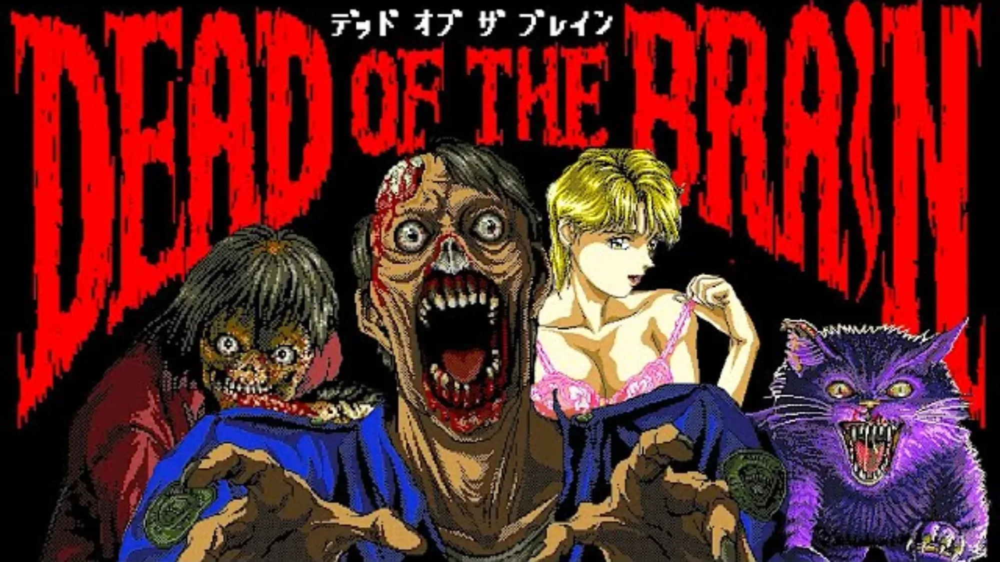

Luiso · 8 de octubre de 2026 · 2 min de lectura
Más de tres décadas después de su lanzamiento original, el juego japonés de horror Dead of the Brain está listo para salir de los límites del PC-98. FAKKU anunció su llegada a Steam como parte de la recuperación del catálogo de FairyTale, el estudio japonés responsable del título.
Publicado originalmente en 1992, Dead of the Brain fue una de las primeras incursiones de FairyTale en el género del horror después de dedicarse principalmente al desarrollo de juegos para adultos. La propuesta es una aventura gráfica de zombis con estética pixel art y una clara inspiración en el cine de terror y splatter estadounidense de los años 80.
Entre sus principales referencias se encuentran películas como The Evil Dead y Re-Animator, algo que se refleja tanto en el tono como en la violencia gráfica de la aventura.
La reedición conserva buena parte de la identidad visual y jugable del original, pero incorpora algunos ajustes destinados a facilitar su funcionamiento en sistemas actuales. La propuesta sigue siendo una aventura point-and-click con exploración, investigación, diálogos y situaciones de terror, manteniendo el estilo pixelado característico de los juegos japoneses de la época.
El cambio más importante para el público internacional será el soporte oficial en inglés. Hasta ahora, Dead of the Brain permanecía prácticamente encerrado dentro del ecosistema japonés del PC-98, por lo que su llegada a Steam abre una puerta para que una nueva generación pueda descubrirlo.
La edición también contempla mejoras de calidad de vida, aunque la intención parece ser conservar la esencia de la experiencia original en lugar de convertirla en un remake moderno.
La recuperación tiene además un interés histórico. Dead of the Brain pertenece a una época en la que el PC-98 era una de las plataformas fundamentales para el desarrollo de aventuras gráficas y novelas visuales japonesas, mucho antes de que estos géneros alcanzaran una audiencia internacional comparable.
Su desarrolladora, FairyTale, es especialmente conocida por sus trabajos para adultos, pero durante un período de su historia se volcó hacia el horror. Dead of the Brain surgió precisamente durante esa etapa y terminó convirtiéndose en uno de sus títulos más recordados dentro de los círculos especializados en juegos japoneses de culto.
La página de Steam confirma que el proyecto está siendo desarrollado por FairyTale y publicado por FAKKU, aunque actualmente la tienda todavía muestra la fecha como “por anunciar”. La cobertura de AUTOMATON, sin embargo, sitúa su lanzamiento para el 30 de octubre de 2026, justo antes de Halloween.
Si esa fecha se mantiene, Dead of the Brain tendrá una oportunidad perfecta para llamar la atención de los aficionados al horror retro y, especialmente, de quienes disfrutan descubriendo juegos japoneses que nunca tuvieron una distribución internacional.
Cargando comentarios…